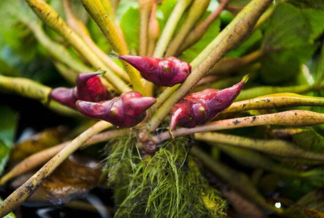
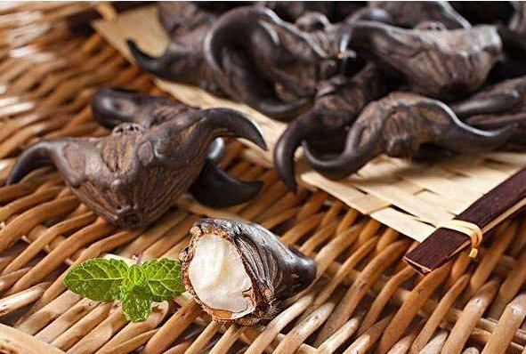

菱角的副作用，吃前必看
菱角，大部分人见到的都是乌菱，长得像个牛角，黑色的外表，果壳特别的硬。菱角虽然长得奇怪，但滋味特别的鲜美。要知道，菱角可是赫赫有名的“江南水八仙”的其中一位，既是一位长相叛逆、看上去有有一点桀骜不驯的少年，又是一位内心非常温柔的带有江南水乡气息的文人。

菱角的味道，自古就记载。苏州人文震亨在他写的《长物志》就有记载“吴中湖泖及人家池沼皆种之。有青红二种，红者最早，名水红菱；稍迟而大者，曰雁红菱；青者曰莺歌青；青而大者，曰馄饨菱，味最胜；……又有白沙角，皆秋来美味，堪与扁豆并荐。”短短几行字，就可以想象到菱角那鲜美的味道。除了文震亨的记载外，清代得《养小录》对于菱角还这样写到“可焯可糟”，称菱角为“野菜中第一品”。
菱角好吃，除了可以直接新鲜吃掉外，还可以烹饪入菜，具体的做法和板栗的烧制没有什么区别。举个例子，菱角也可以和栗子烧肉一样，和鸡肉一起红烧。同样栗子蒸饭，菱角也可以。除了板栗的那些基本做法外，菱角还有一些创新之处，比如新鲜的菱角，肉质鲜嫩爽脆，可以切片，和藕片一起清炒。
注意！菱角的禁忌一般人都忽略
每次到了七八月份，总是会听到大人们说这样一句话“天上银河戳角，地下鸡头菱角”。意思是说，当天上的银河朝向西南和东北方向时，江南的乡间就到了可以吃“鸡头”菱角的时节了。能吃到美味的菱角当然是一件开心的事情，但是咱们在吃的时候，这些菱角的禁忌咱们千万不要碰。
禁忌一：菱角不能生吃
对于菱角，有人会认为刚刚从池塘采摘过来的菱角直接生吃，会特别鲜美，特别新鲜。这个想法大错特错，要知道生吃菱角危害极大。这是因为菱角和莲藕一样，属于水生植物，生长在水中淤泥里。可想而知，淤泥里的各种寄生虫、细菌有多少附着在菱角上，特别是姜片吸虫是最喜欢生长菱角上的。这种寄生虫一旦进入人体会寄生在我们的小肠上，会让我们腹泻、腹痛、贫血和浮肿，体质较差的人可能还会有肠梗阻、肠套叠的现象，严重的可能会导致死亡。
这不是危言耸听，每年都会有生吃菱角肚子痛的新闻在。所以咱们一定不能一时贪快，生吃菱角、荸荠、莲藕等水生植物。如果想尝尝新鲜的菱角，可以将菱角用清水冲洗干净，并用开水把菱角浸泡几分钟或者在阳光下暴晒一天，确保菱角上的寄生虫处理干净了，才能说放心食用。
禁忌二：脾胃虚寒的人不易吃
中医上讲，菱角是水生植物，味甘涩，性凉，吃太多的菱角容易增加体内的寒冷之气，降低身体里的燥热之气。这对于脾胃虚寒的人来说，他们的肠胃功能比较脆弱，吃太多的菱角容易加重他们脾胃的不适。
禁忌三：腹泻的人不易吃
刚刚咱们还讲到菱角是水生植物，性质寒冷，所以具有一定的滑利性，腹泻的人或者是肠胃不好的人如果吃太多的菱角，则会加重腹泻的症状，引发身体的不适。
特别是小朋友，如果吃太多生的菱角是非常有可能拉肚子的，所以一定是要让他们吃经过蒸煮过的菱角，并且要适量食用，以免伤到小朋友那脆弱的肠胃。
禁忌四：菱角好吃 可不能贪多哦
菱角不仅营养价值高，常常吃菱角有助于补充能量、增强免疫力，起到强健身体、补脾益气的作用；而且菱角的味道还非常棒，可以做菱角米红烧肉、菱角小米粥、盐水煮菱角等等一些美食。但是这样好吃的菱角也不能吃多，这是因为菱角属于高淀粉食物，不宜多吃，以免导致消化不良或者引起肥胖。所以，再好吃的食物，咱们都需要讲究“适量”原则，免得让美味变成咱们的负担。
副作用没那么可怕
经常有人会在新闻中，看见这样的新闻，说某某吃了菱角被人送进了医院，轻者拉肚子，重者还得住院检查，这是怎么回事？这菱角不是非常有营养价值吗，咋还让人住上医院呢？
其实，这并不是菱角的错，而是咱们并没有了解到菱角的副作用，不科学的食用，当然是会出大问题的。所以咱们一定得了解了解这小小菱角又有哪些副作用呢？简单来说，菱角的副作用可以用“相克”来概括，不正确的搭配，可以会有“巨毒”。
首先，菱角和猪肉一起食用，可能会引起脾胃虚寒的现象或者是引发腹泻、腹痛等等。这是因为菱角属于寒凉的食物，猪肉是油腻的食物，在一起搭配食用并不适合。
其次，菱角不能和寒性食材一起吃。这是因为菱角本身就是一种性质寒凉的食物，菱角含有较多的寒气，平时人们在食用菱角都可能引发脾胃虚寒。如果再把菱角和一些寒性食材一起吃，就会让人体内的寒气加重，会引发身体不适。生活中常见的寒性食材有冬瓜苦瓜以及黄瓜和秋葵等，它们都是不适合与菱角一起吃的食材。

第三，菱角也不能和蜂蜜一起食用。有人喜欢生吃菱角的时候蘸一些蜂蜜一起吃，增加口感。但是菱角和蜂蜜吃是非常容易导致消化不良，可能还会出现腹胀、腹痛、腹泻等等一些不适的症状。
老一辈的人，会十分怀恋菱角的味道，因为在以前闹饥荒的时候，农村里真的是穷得响叮当了，常常是吃了上顿没了下顿，而菱角一上市，就是“救命粮”，既耐饿，味道还不错。所以，虽然菱角吃的时候确实是有些麻烦，但不妨买来吃一吃，尝一尝那“别样”的滋味。
 上一篇
上一篇